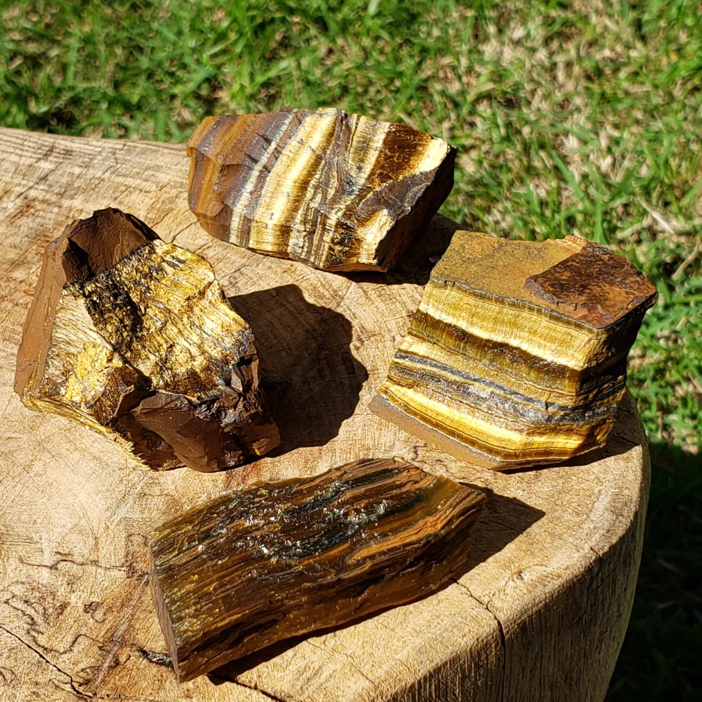
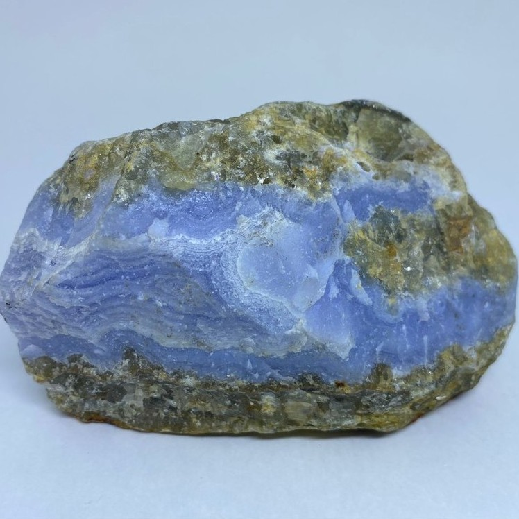
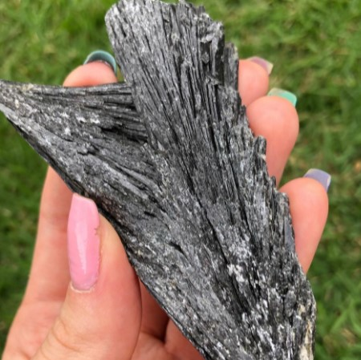
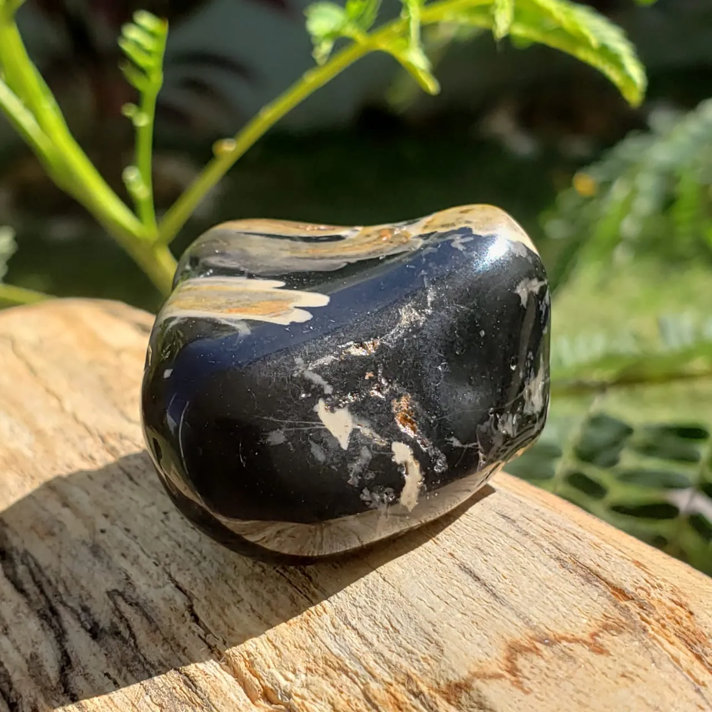

Olho de Tigre
O Olho de Tigre é um cristal de proteção, poder pessoal que traz uma energia de vitalidade, praticidade e ação. Ele nos auxilia a sermos eficazes ao enfrentar os desafios que aparecem em nossa vida, nos deixando calmos, centrados e aterrados. Uma pedra doadora de coragem e determinação, amuleto de empoderamento e realização, que nos traz auto confiança e decisão. Protege a casa e pessoas contra mau olhado, excelente para combater sentimentos de inveja.

Calcedônia
A Calcedônia é uma pedra nutriz que promove a fraternidade e a boa vontade, aumentando a estabilidade dos grupos. Ela pode ser usada para ajudar na transmissão de pensamentos e na telepatia. É uma pedra que absorve energia negativa e então a dissipa, impedindo que ela seja transmitida. Ela funciona como um escudo protetor, impedindo que raiva, mal olhado, inveja e outros ataques atinjam seu portador. A Calcedônia harmoniza a mente, o corpo, as emoções e o espírito. Diminui a hostilidade e transforma a melancolia em alegria. Ela é um cristal que nos dá forças para continuar, que nutre a alma e encoraja sentimentos nobres como a benevolência, generosidade e a humildade.

Cianita Preta
A Cianita Preta ou Vassoura de Bruxa, possui um alto poder na limpeza energética da aura e de ambientes. É uma ótima opção para quem está sendo influenciado por uma carga exacerbada de negatividade de um determinado local. Transmite e amplifica energias de alta frequência e é excelente para meditações. A energia da Vassoura de Bruxa é purificadora e neutralizadora, funcionando como uma espécie de escudo energético que bloqueia a passagem de energias negativas e as aterra para assim neutralizá-las na terra.

Ônix
Essa pedra canaliza energias para atingirmos nossas metas e nos mantém seguros e centrados mesmo nas situações mais difíceis. Ele aumenta a nossa autoconfiança, cria um escudo energético, nos protegendo de energias não benéficas. A pedra Ônix tem sido usada há muito tempo como um amuleto de proteção e força.
